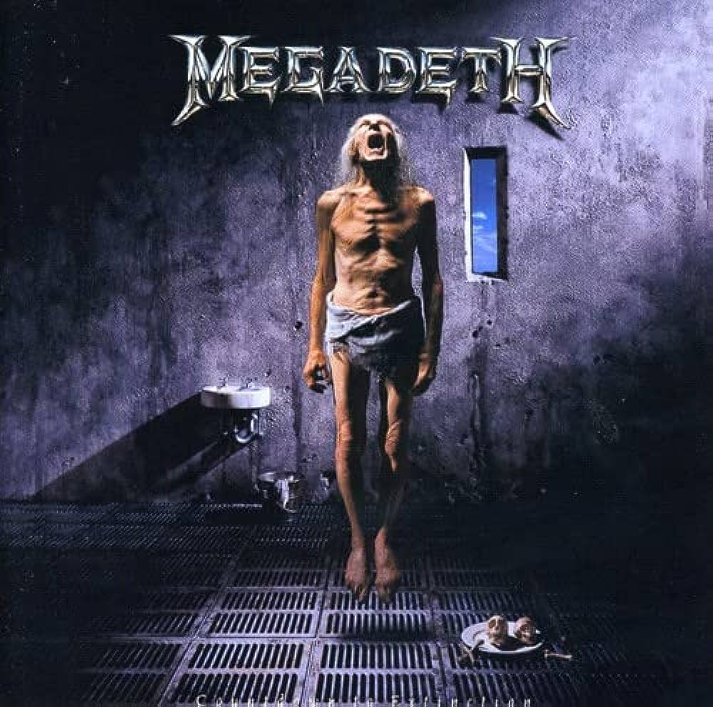

Top 7 Canciones mas exitosas de Megadeth
1. Holy Wars... The Punishment Due
Album: Rust In Peace

Esta canción es conocida por su complejidad musical y lírica. Está dividida en dos partes: "Holy Wars" y "The Punishment Due". La primera parte trata sobre la guerra y la religión, mientras que la segunda parte aborda el tema de la justicia y la venganza. Es una de las canciones emblemáticas de Megadeth y destaca por sus cambios de ritmo y habilidades técnicas de los instrumentistas.
Canción en YouTube2. Peace Sells
Album: Peace Sells... But Who's Buying?

Es una de las canciones más reconocibles de Megadeth. La letra aborda la corrupción y la hipocresía en la sociedad. La icónica línea "Peace sells, but who's buying?" se ha convertido en un lema de la banda. La canción tiene un ritmo enérgico y un bajo prominente, lo que contribuye a su distintivo sonido.
Canción en YouTube3. Symphony of Destruction
Album: Countdown to Extinction
Esta canción es un himno de protesta contra las figuras de poder y los líderes que manipulan a las masas. La letra critica la destrucción causada por las decisiones equivocadas de quienes están al mando. "Symphony of Destruction" es conocida por su riff de guitarra característico y su estribillo pegajoso.
Canción en YouTube4. Hangar 18
Album: Rust In Peace
Es una canción que aborda teorías de conspiración y la posibilidad de encuentros extraterrestres. El título hace referencia a una instalación militar que se ha asociado con investigaciones sobre ovnis. La canción presenta solos de guitarra virtuosos y cambios de tempo distintivos.
Canción en YouTube5. Tornado of Souls
Album: Rust In Peace
Esta canción habla sobre una relación fallida y el dolor que conlleva. Sus letras expresan emociones de pérdida y traición. "Tornado of Souls" es conocida por sus rápidos pasajes de guitarra y su emotiva interpretación vocal.
Canción en YouTube6. Sweating Bullets
Album: Countdown to Extinction
La letra de esta canción parece explorar la lucha interna de una persona con su propia mente. El narrador parece estar experimentando pensamientos inquietantes y confusos. La canción tiene un ritmo pegajoso y un tono inquietante que complementa la temática lírica.
Canción en YouTube7. A Tout Le Monde
Album: Youthanasia

Es una balada melancólica que aborda el tema de la muerte y la despedida. A menudo ha sido interpretada como una canción de despedida a los seres queridos. Aunque inicialmente fue controvertida debido a malentendidos sobre su mensaje, la canción se ha convertido en una de las más reconocidas y emotivas de Megadeth.
Canción en YouTube